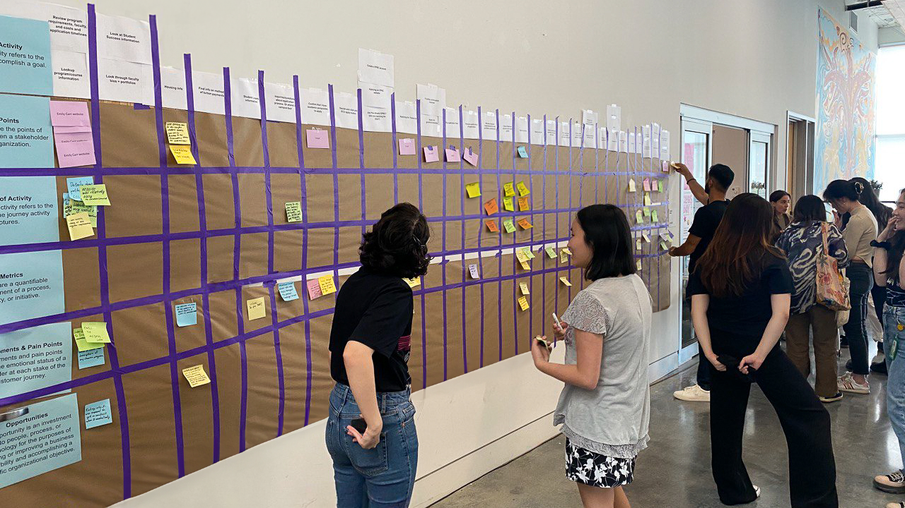
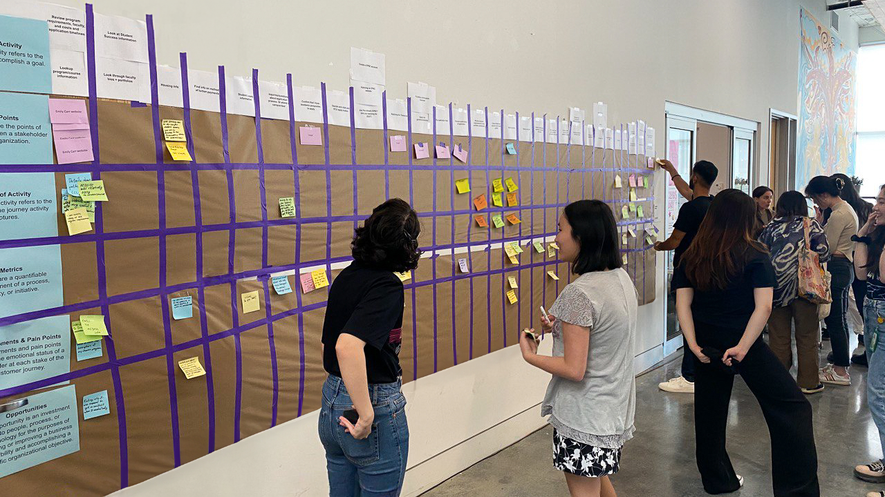

Nelly Mafi, the driving force behind the Service Desk project at ECU.

After graduating and receiving a graduation award, I was invited by Sandeep Sidhu (CIO of ECU), to join the IT team as a Business Analyst and UX Designer. Under the supervision of Stephen Wichuk (Service Experience Manager), my role focused on enhancing the digital experience related to IT Services. I led the student journey mapping initiative, identifying key touchpoints that required improvement. This process resulted in several new projects, including the Service Desk project, which I played a significant role in. The Service Desk serves as the central hub for IT support for students, faculty, and staff. My contributions helped design and develop the Service Desk experience, making IT support more accessible, active, and user-friendly for the entire ECU community.
Business Analysis
User Experience
User Interface
Front-End Development
Visual Design
Video Production
Emily Carr University
June 2023 - May 2024
An overview of the ECU Service Desk and the services it provides.
We wanted to identify both pain points and opportunities at each touchpoint of the user experience. The journey map was designed to span all stages relevant to our target persona. It featured rows organized into touchpoints, key moments, pain points, and opportunities. Participants were given sticky notes to actively share their experiences and insights at each step of the journey.
 


Phase 1 journey mapping activity conducted on ECU campus.
Users face challenges due to the complexity of navigating through multiple systems, leading to information overload and fragmented knowledge across the organization.
The user base heavily relies on ITS support, highlighting the need for a comprehensive Knowledge Base for troubleshooting and a more adaptable ticketing system to enhance flexibility.
Outdated information hampers decision-making and negatively impacts student outcomes. Staff and faculty encounter obstacles in task completion, struggle with adopting new tools, and are often unaware of significant initiatives.
To build a more connected and user-centric IT environment, I carried out a site-mapping review that examined the information architecture of the ECU website’s IT section. This process revealed key opportunities to integrate the Service Desk into the broader system.
Sitemap subtitle.
ECU website subtitle.
My approach to designing the Service Desk platform and its integration was rooted in respecting ECU's brand identity and design system. It was crucial to align with ECU's guidelines, ensuring that we maintained consistency and upheld the integrity of their established design standards.
Mention TDX (limited)
Service Desk Home Page subtitle.
Form blah blah blah
Services subtitle.
Automated ???
Nelly Mafi, the driving force behind the Service Desk project at ECU.